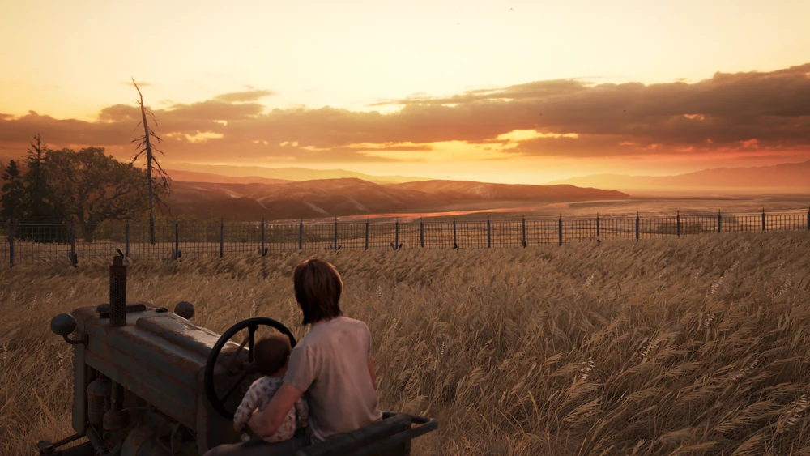
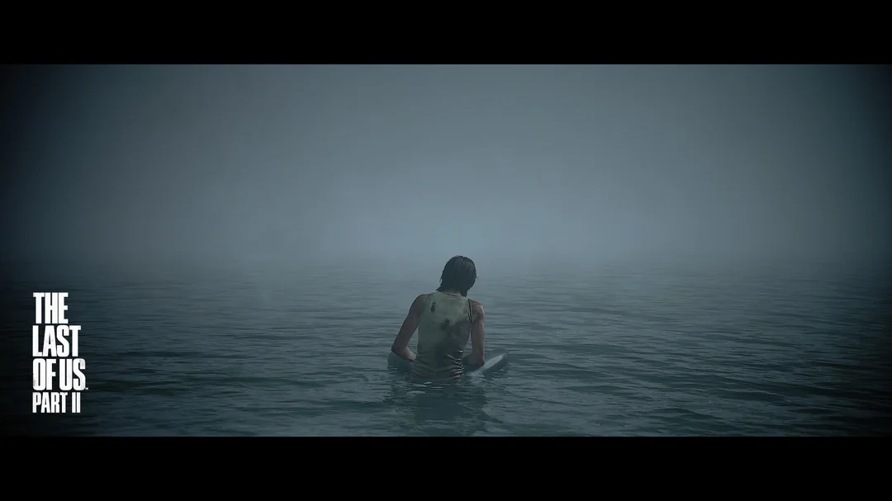

Ok so why a separate page? No other piece of media has affected me as much as Last of Us. I have seen every lore video possible on YouTube about this. I am incredibly lucky that I was not spoiled about anything major in the game. Wow where do I start.
Well, to tell why this game had such a big impact, I have to start with Naruto and my Class 8 experience (I know, that's pretty far back, but stay with me here). I shifted to Haryana from Himachal at the end of 2017 and what I didn't realize at that point is that I had been in a protective bubble of my brother, my family and my childhood friends so far. Now suddenly I was in a new school, a completely new culture (it might seem baffling, despite how close Himachal and Haryana are, but they couldn't be more different), my brother was in college now and suddenly I had to navigate and socialize everything myself, in the years of my life where I myself was changing so much. That year was genuinely tough and was one of the most formative years of my life. One of the shows I was watching then was Naruto. A story where he grew from a point where no one believed in him to what was the top position in his village (Hokage). In that whole year I felt like I was growing with him. It's the sort of connection you feel with your friends you are growing up with. And he was also providing exactly what I needed at the time. Confidence in myself and how important it was to make connections with the people around you. My growth from an introverted guy in a shell to where I am now would take 8 more years. But the path I took was more or less the same.
I have seen a lot of movies, played a lot of games since then, but I never felt this connection. A lot of things contribute to that, things become formulaic, the timing doesn't match, JEE and then college happens. A lot of shows/movies do manage to capture that feeling from time to time (see the haha yuh I'm peak list), but the degree is usually smaller.
This is where this game comes in. It hit that feeling within me. It was a game I had been building anticipation for over a long time. I knew I would be playing it in the summer at the end of my second year. I had avoided spoilers for years. And the opening just pulled me in immediately man. Ok I will get into spoilers past this because it's impossible to discuss it without them. So SPOILER WARNING for anyone who cares.
OK so funny story. When we start the game as Sarah, I was like, hmmm why is she blonde? I guess she got it colored because the girl on the cover definitely has brown hair LMFAO, not knowing what was about to happen. I was hooked immediately. The story per se isn't something that hasn't been done before. A reviewer referred to it as Zombie UP, and he isn't wrong. But I have learned over the years that tropes at the end of the day are just tools and it isn't bad to be tropey? It's how you use it to tell the story you want to tell. What Naughty Dog did here was sell this game as a zombie stealth shooter about taking a girl all the way through America because she is the cure for humanity. And you need to get her to the right people. But they use this "Save the world" trope to tell a beautiful story about a broken man and a lonely girl. Immediately when you meet Ellie, you kinda expect what is going to happen. Joel starts seeing Sarah in her but he outrightly rejects that closeness, because he doesn't want to get close to anyone again, because he can't bear losing anyone again. For Ellie though, he is the only person she has been so close to who hasn't left her and she dreads being alone again. It's 2 people who want the best for each other at crossroads with what they want for themselves and for the other. It is so beautifully done. This whole 'UP' process of Joel becoming a father figure for her and Ellie giving Joel motivation and hope for the world again is so beautiful and done so intricately. Even though I had guessed this would happen, the way they went about it just pulled me in. The silent moments where we are just travelling from one point of interest to another, filled with dialogue that a lot of people miss, build their relationship so well. It's in these quiet moments that they pulled me in and I didn't even notice it. The part of the game between the Dam and the University was where I got so emotionally hooked on these characters, and it remains my favourite part in any game to this day. The talk they had in the house, ohh man all that built-up tension being released. Absolute Cinema.
The winter arc is a different ball game, where we begin to see a part of Ellie we will explore more in Part 2. The world she lives in is very cruel and effed up and tribalistic in its nature now. And to protect the people she loves, we see she is willing to go to any lengths, like Joel. But we have heard how that can take a dark turn in Joel's backstory. She is scarred by this and all this loss of life has her wanting her immunity to mean something. There are a lot of themes here: does humanity even deserve a cure given everything that is happening? Joel, having already lost hope in humanity, only gains some hope through Ellie, and we see how Ellie reacts when she is exposed to the reality of the world. All these themes in hindsight were pointing towards the ending, which again shows, my god this game is beautiful.
The ending is what made this game an all-timer. The cure, if possible, will kill Ellie, so Joel has to choose between saving the world or saving his world. This choice has been extensively debated. Even if you ignore the technicality and logistics of the cure and how incompetent the Fireflies were, and should a vet even be trusted with the cure for mankind, and shouldn't Ellie be informed about it, it still, for Joel, boils down to: is a world without Ellie worth it? And he made his decision. I'll write what I think about this in Part 2 - which is essentially about the consequences of this decision. I have not been hooked on two characters' well-being to such an extent since Naruto. As I was about to start Part 2, I was scared of whether something would happen to them.
I had heard that Part 2 was polarising and not universally loved. But the beginning of Part 2 was as lovely as the beginning of Part 1. What a lovely scene. You know where I grew up, playing guitar was a thing people did to look cool and anyone playing guitar acted so smug about it that it just made me hate anyone with a guitar. THIS scene made me want to learn guitar bhai so beautiful. We begin Part 2 with Joel, and the first 10 minutes is all we get in the game to play as him, very similar to Sarah. You must see where I am going with this, right? I had a feeling after Part 1 that Joel's story would be done once he had seen Ellie grow up, but I did not know when that would happen. IT happens like ONE hour into the game bro. I was so shocked. It is also very cool how Part 1 is a game about the consequences of Joel losing Sarah, while this game is about the consequences of Ellie losing Joel, and Joel is given the Sarah role in this. Joel gives Ellie the gift this time, in the first 10 minutes. So cool. Before Joel's death we go through a very high school phase of the game, and it feels so uncanny, as these are people who are too mature for their age because of the world they live in, getting to live the high school life, and the feeling of dread is there. Because there is no way this can continue, right? And it doesn't. Abby smashes the shit out of Joel with the infamous hockey stick. This is controversial because a lot of convenient coincidences happened for it to happen, which is true but it's also something they had been building up from Part 1. Joel had mentioned a lot of times that they had had too many close calls and their luck would run out one day, and Bill had also mentioned that this girl would be the death of him, as he saw him getting too soft. This argument doesn't work because we can also term a lot of moments when they survived as convenient coincidences if we go to such lengths in Part 1 (e.g., how Ellie just happened to be there with a gun).
I also thought at this point, bro is this just revenge slop? It would be intriguing, seeing her turn into Joel more and more as she goes through this, revealing what Joel would have been like post losing Sarah, but the first game was so good that it seemed like a cheap sequel if they just killed Joel for that. And for a lot of people it is, because it was portrayed as one. I am not going to lie, Part 2 asks a lot from the player: patience to go through a lot of gore and seeing Ellie, someone you love so much, go through all this. She seemed weird even before Joel's death which seems off given her personality but makes more sense as you keep playing. Seeing her go from the energetic and cheerful version in Part 1, a girl with so much hope and love for the world, actively lose it, is very painful. And if they were daring enough for 2 beloved characters to go through this, it better have been worth it. And thankfully this was not revenge slop.
Day 1 is just us exploring Seattle with Dina and you can feel Joel's absence. The quiet moments, which were the most beautiful part in Part 1, seemed awkward. You can see that Ellie, even though she loves Dina, does not trust her the same way she would Joel, and the charm in the conversation was missing. I heard a theory that Day 1 is slow because it is meant to simulate the days after you lose someone, where you need to do mundane activities and they seem so pointless but you need to go through them anyway. I love this theory, I don't know if it was intended or not but it is true. A lot of people were annoyed by this and I don't blame them because if you were not invested it seems like a drag to go through. But then you are hit with the end of Day 1. I cry every time I play/see this scene play out. All the absence you have felt since Joel passed away, they show us what we have been missing. It is the most beautiful level in the whole story.

This is where we start to actually unravel what has been going on inside Ellie's mind. The survivor's guilt that I had forgotten about at this point is still there. It is enhanced every time someone dies because of the infected. As evidenced in Part 1, she also has a great bullshit detector, and she knows Joel isn't telling her the full story of Part 1, but because she is afraid of how it will affect her relationship with him, she does not want to pry more. She is also a dreamer, she wants to be an astronaut, see what space is like, but in her world survival itself is a virtue, a virtue that fills her with guilt. Therefore she wanted her immunity to mean something. And the person she loved the most stole that from her.
Day 2 is the best chapter in terms of gameplay. I died at Hillcrest so many times. I was also doing permadeath and it was so annoying and also very rewarding as I was actually shit scared of dying in the game. This is also where we see Ellie acting without a filter as she is without Dina, and we see her acting the most hateful we have seen. In the hospital, wow man they made us watch and do it. This is another part where people would hate it thinking she did it out of hate and revenge, but as we will find out later, this is because she can't forgive herself and is trying to project it onto Abby and Co. And we finally get to know that Ellie knows. She knows what Joel did with the Fireflies. In a gut-wrenching scene, we see that Ellie went back to the hospital to find out what Joel did, and she confronts him with it. She is gutted not only because she could have been the cure for humanity, but because the person she trusted the most betrayed her and did not trust her with the truth or her responsibility with the cure. This is where they drift apart.
Day 3 is her using this obsession with Abby as a way of coping with Joel's loss at its peak. We see her get obsessed to the point where we start losing empathy with her. She says otherwise, but she is prioritising herself over all the other people she has involved in this. This is again, Day 1 materializing: we see that despite her making connections in Jackson, she lost the person she cared about, and though she cares about these people, it isn't in any way close to Joel, maybe because she is afraid to let them get too close, like what Joel did after Sarah. The game has signaled this in a lot of ways. What a stunning day. This day is my phone's wallpaper. Well, I knew this wasn't going to have a clean ending, she ends up doing unthinkable things at the aquarium, a site we will become familiar with soon. She couldn't find Abby, but Abby ends up finding her and PAUSE.
At the point where we finally get the confrontation, it shifts to Abby's backstory. This was weird. I was hoping to see what happens and when it shifted to Abby Day 1, I was very angry. I ended up searching whether we were going to play all three days as her. And yes, we were. WHAT THE HELL BRO? I wanted to stop playing, but I wanted to see the conclusion, and people on Reddit said I should continue, so I did lmao. We see what Abby's motivation was. She was the daughter of the doctor we kill at the end of Part 1. Her story is similar to Ellie's Part 2 story. She did not see a purpose anymore without the cure and her dad, the only possible motivation she had was revenge and she pursued it. It made sense, but I still did not sympathize with her. Cause she killed Joel. And being forced to play as her for what, 12 hours, seemed like something I was not willing to go through. And I think the developer also knew that. Therefore they gave her the best levels in the game. Bruh once we get through the Day 1 formalities, OOOOOHHHHHHH boy does it get good. Part2 Part2 essentially begins when Lev shows up saving Abby. Every level henceforth is CINEMA. And because of this the game achieved what it wanted. I ended up not hating Abby. Her relationship with Lev is a direct reference to how Ellie and Joel's relationship progressed, we just see a person we hate going through it. Here is when we see the actual theme of the game kicking in.
Watch the above sequence till like the 5th minute. What a transition, SOOOO TUFF.
The theme of the game is learning to empathise with the unempathisable? Yup that is a word. Over these 12 hours they force us to see Abby as a human who made a mistake because she couldn't find any other way, a mistake we as players and Ellie see as unforgivable. And it pushes us to the point where we see the violence in the game as pointless. It's depicted by the theme of the 'WLF vs Scars' fight and the whole revenge cycle. We continue playing as we see Abby come to this realisation, where her priority becomes what Joel's had become in Part 1: just protect the people closest to you. The Island is CINEMA. I know I am saying that a lot and it might be losing some meaning but it is. Although we see Abby coming to this realisation, it comes too late for her, as her actions have had dire consequences. Ellie and Tommy had basically wiped out all her people.
(OHH I haven't mentioned Tommy, he is goated. There is a sequence where he is teaching Ellie how to snipe, a sniping mechanic that isn't used anywhere except on Day 3, when we are trying to find the boat to the Island and have to go through a sniper mission, another direct callback to Part 1. Earlier in Ellie's Day 3 we had heard that a sniper was eliminating a lot of WLF, and we had presumed that to be Tommy. I had forgotten it by this point, and I was just going this is so cool, and then the sniper kills one of Abby's friend and wooh, we get to find out it is Tommy, it is so surreal. It also brought into perspective how OP we are as players and the abilities given to us compared to other NPCs. This comes back later as well.)
We see Abby going back to her earlier ways here, trying to hunt down Tommy and Ellie. And here is when we get the confrontation, the same confrontation we had 12 hours before, just from her perspective this time.
Well, I had a feeling about whose perspective the Ellie–Abby fight would be from. I was dreading it being from Abby's side. And it was. I now had to have a BOSS FIGHT with ELLIE. I couldn't bring myself to hit her bro. I like died a lot of times from her traps and was proud like damn, I have seen her learn to do that. But ahh, to progress the story, I had to beat the shit out of her. I did, it was pretty unwatchable but I did. We then get another callback to how Abby is like Joel, because she does not kill Dina because of Lev. A kid you are going on adventures with bringing out the human side of you? Yup, that was Part 1.
I think Naughty Dog succeeded too much in what they wanted to achieve. With Abby, they wanted to show that Joel, from another person's perspective, ruined a lot of lives. They achieved that with Abby. They wanted the players to hate her but to then understand her perspective. One thing they did not anticipate was that this hatred could be thrown at them. This game became so meta, because the hate for what happened to Joel and Ellie was thrown at them, the hate thrown at the writer Neil Druckmann, because he was born in Israel. Them showing that violence isn't one-sided and both sides think they are justified from their end was labelled pro-Israel, showing how people use anger and hate to cope, the same message the game was showing.

Now we get to the perspective change, and why it's so much more rewarding to play this game twice, or at least watch your brother playing it, as it was for me. We know by now that Ellie knew all along what Joel did, they grew apart because of that, and she has had immense survivor's guilt, and although she was most afraid of being alone, she is more obsessed with Abby than with making sure the people she has stay safe. This seems a little on the nose, in the sense that yeah she was using revenge as a method to cope, but it didn't seem like Ellie to be so obsessed and let Tommy and Dina get in danger like she did on Day 3. That is why when we got to the Farm level, I was unsatisfied personally, because there is no way there is such a clean end to this mess, but also because I still didn't understand Ellie's perspective completely. Therefore when I saw the flashback and the Tommy section, I was like DAMN. She has PTSD, which isn't surprising. But here is when the diary is used at its best for storytelling. How the diary is not compulsory is beyond me, most of Ellie's inner thought process goes in there, something she would just talk to Joel about earlier. Thoughts she isn't comfortable telling Dina about, because she thinks she is already being a burden and because she has already asked a lot. We read she hasn't been eating, we can also notice her being comparatively thin. Throughout the story, she can't remember Joel's face, because every time she tries to think about him, she remembers the last moments, which, as we will soon see, fill her with a lot of guilt. The Tommy section is so brutal, it's 2 people broken by what they think is their responsibility to Joel. She can't sleep. And we get to play one sleepless section where she plays the guitar again and we see another flashback, her fight with Joel. And it is shown that she can't take this pain anymore. Living with Dina like this fills her with a lot of guilt, not only because she can't fulfill her responsibilities to Dina, but also because she feels she is being a burden. This, on top of the guilt of Seattle and her already built-up survivor's guilt, leaves her with no choice except to try to make things right with Abby. That is the only choice she can see. And we get this parallel from the start of the game, where Dina had said she would go anywhere with Ellie, but now Ellie has to choose between Dina and going after Abby. But this isn't a hard choice for Ellie, as she already thinks she is being a burden to Dina (OH MY GAWD bro, the thing with yuri relationships is I have to write their names so many times because I will keep writing she otherwise).
Santa Barbara is just cool gameplay. Context required for the final is: there is a cult/militia in Santa Barbara that has captured Abby and Lev, and they have left them to starve as some punishment. I am sure there is more to it, but I never really got into it as I was really only interested in what happens when they finally meet. Ellie ironically saves Abby from her impending death, and we see this cool sequence, where Abby carries Lev to a boat, a direct reference to Joel carrying Ellie from the hospital. But as Ellie realises Abby is going away, and her blood kicks her PTSD again, she is forced to act. I have seen theories online that PTSD makes people do stuff that they don't want to but they feel like they need to. I don't know how true that is, but so tuff, if true.
The final fight is brutal. I don't want this to happen. Both of them don't want this. But they can't help it. For Abby, it is the consequences of her past actions, for Ellie she needs to do this because she doesn't see any other choice. It's brutal. Now this is how I see what happens next: as Ellie is about to succeed, all the emotions she has had come flooding in. She actually remembers Joel, and instead of seeing someone she has to do justice to, she remembers him for the person he was. Thematically, and after all this killing, it seems a little far-fetched for her to come to her senses now. But that depends on the type of gameplay you do, actually. You can essentially do a no-death run if you want, except for the people she kills in a stand-off, so it gets easier to justify her then. But yeah, I don't have a conclusive reason why she spared her. It is a multitude of gray factors. Abby had let her live at 2 points by this point. Abby had Lev, and maybe she saw her in Lev at that point and decided it is not worth it. Remembering Joel finally. I also think she got the feeling she would get after she killed Abby in those 10 seconds she was drowning, and she could see that it was empty.

After ALLAT, we see Ellie return to the Farm, an empty house except for her stuff, which Dina left. Ellie pulls out her guitar to try to play Joel's song. She can't, because she lost 2 of her fingers in the fight with Abby, and we see her reminiscing once again, back to the day before Abby showed up, after the fight she had with him at the festival. Ohh I cry every time I hear this conversation. It's Ellie wanting to apologise to Joel for shouting at him while still being angry and carrying resentment for what he did in the hospital, and Joel having unconditional love for her. It is the most beautiful parental conversation you would see. The "I would do it all over again" line is sooooooo gooooood. You see, he wants her to know that he cares about her this much, that he feels no remorse, and she shouldn't either. He wants her to live without any regrets. Here is where Ellie begins to realise that carrying this resentment won't take her anywhere. "I would like to try." Ohh I cry every time. This changes our whole perspective of the game. This whole journey wasn't a revenge quest for Joel. She couldn't forgive Abby because she stole Ellie's opportunity to forgive Joel. In the game, earlier in one of the optional dialogues with Dina, we hear that Ellie was going to watch a movie with Joel that night. She hates herself for carrying all this resentment for him for so long. She lost this opportunity and lost a person who loved her unconditionally because of this resentment and she couldn't forgive herself. The only way she could think of was doing justice for him, but that put her in the same cycle as Abby. This whole journey was her trying to forgive Joel. And what I see in the end, when she lets Abby go, she forgives him through her. This is what I interpret from it. What a beautiful story man. It is about empathizing and forgiveness for people. Cause in the end, we are all humans who will do shitty stupid things, thinking what we know is absolutely right, and in doing so end up hurting people. This game materialized that feeling for me, on top of all the other beautiful shit it did before it. The relationship Ellie and Joel had is some of the most beautiful shit I have seen, and through that Naughty Dog is sending so many beautiful messages and I love it. AND OOOHHHH MY GAWD, THE MUSIC, I didn't even talk about that, that guitar Trrrrring sound that Gustavo makes, SOOOOO TUFFF. Every time I see this game I learn new things from it and new layers are revealed, which again, is so tuff. I can't wait for Part 3, they can't leave Ellie's journey here. They have broken her down. They need to build her up again. And it would be so tuff to see Abby and Ellie working together, once they are both healed.
This turned out to be so long. Kinda on point, because this game was also delayed so much since they wanted to do justice to it. But yeah, I wanted to write about it cause I have never been so deeply invested in 2 characters as much as I have here, and they use that connection in Part 2 to tell a lot of beautiful stories and I look forward to more. Haha Yuh, It's Peak.